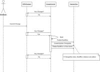

Description
The VersionOne CruiseControl integration creates a record of CruiseControl builds in VersionOne, so the development teams can associate stories and defects to a particular build. This visibility is useful when identifying problem builds or generating release notes.
Once the VersionOne Publisher has been installed, team members include a story or defect ID, such as “S-01454”, in the comments of their SCM commit . Every time a build executes the publisher creates a BuildRun asset in VersionOne with details of the build. If the build comment contains story or defect IDs, the publisher will also create or reuse change-sets assets in VersionOne and assoicates the build with the appropriate story or defect.
Using this integration you can better answer the following questions:
- Defects
- Which build the defect was reported against?
- Which build contained the fix for the defect?
- Which builds contain work for the defect?
- For Stories (Backlog Item)
- Which builds contain work for the story?
- Which build contained the completed story?
- For Build Runs
- Which defects were fixed?
- Which stories were completed?
- Which defects were introduced?
- When work for a story or defect was included?
- Which Change-sets were included?
- For a range of Build Runs
- Which stories were completed?
- Which defects were fixed?
- Which defects were introduced?
The following sequence diagram illustrates the VersionOne CruiseControl publisher behavior.

System Requirements
VersionOne:
- 8.1 or above, including Team Edition
Integration Server:
- Operating System – Windows 2000, 2003
Continuous Integration Server:
- Tested with CruiseControl Version 2.7.3 - 2.8.4
Downloads
The latest version of V1Publisher is available at V1: Integration Downloads
Installation
These instructions presume that CruiseControl is already installed, configured, and working properly.
- Ensure Connectivity
Verify that you can connect to your VersionOne instance from the machine hosting CruiseControl
- Extract Files
Download VersionOne publisher using the link above and extract it into a folder of your choice. This can be a temporary location since we will copy some of these files during CruiseControl configuration.
- Configure
- Verify the installation
Once configuration is complete use the following steps to verify that the build integration is working- Navigate to CruiseControl
- Force a build on the project you configured
- Wait for build to complete
- Navigate to VersionOne
- Login
- Select VersionOne project in 'My Projects' dropdown
- Navigate to the Reports | Reports Overview page
- Select the "Build Run Quicklist" Report
You should find an entry in the Build Run Quick List grid for the build you forced. If not, verify your configuration.
Configuration
Configure VersionOne
| If you are using Team Edition, you need to manually create the Build Project. Instructions for doing this are available on the VersionOne Community Site. |
- Log into the VersionOne application as admin
- Navigate to the Admin | Configuration | System page.
- Check the “Enable Build Integration” checkbox and click the Apply button.
- Navigate to the Admin | Projects | Build Project page
- Click Add to add a new Build Project
- Specify the following
- Name – this is how the Build Project will be known to VersionOne users
- Reference – this is how the Build Project is known to Cruise Control
- Click Ok to save the new Build Project
- Navigate to the Admin | Projects | Projects page
- Click Edit on the row for the project you want associated with a Build Project
- Using the “Build Projects” dropdown add the appropriate Build Project.
- Click Ok to accept the changes
- Logout


{kind=link}
Configure CruiseControl
This section describes how to configure CruiseControl for use with VersionOne
-
- Copy the following files from the downloaded package into the CruiseControl lib directory
- V1Publisher.jar
- VersionOne.APIClient.jar
- VersionOne.ObjectModel.jar
- Register the VersionOne plugin by adding the following line to config.xml
<plugin name="VersionOnePublisher" classname="com.versionone.cruisecontrol.publisher.VersionOnePublisher"/>This registration can occur directly under the <cruisecontrol> element, or within the selected <project> element.
- Add the VersionOne publisher to the list of publishers for the select <project> elements in config.xml
<publishers> <VersionOnePublisher url=... integratedauth=... username=... password=... useproxy=... proxyurl=... proxyusername=... proxypassword=... proxydomain=... webroot=... referenceexpression=... referencefield=.../> <onsuccess> <artifactspublisher dest="..." file="..."/> </onsuccess> </publishers>
- Use the following table to configure the VersionOne Publisher
Node Description Required Default url The URL of the VersionOne Application. For example: http://server/VersionOne/ Yes integratedauth Set this attribute to "true" if your VersionOne instance is configured to use Windows Integrated Authentication. No false username The username to authenticate with. Yes password The password to authenticate with. Yes useproxy Enables support for proxy connection to VersionOne No false proxyurl URL for proxy server Yes, when using a proxy proxyusername User name for proxy server Yes, when using a proxy proxypassword Password for proxy user Yes, when using a proxy proxydomain Proxy domain Yes, when using a proxy webroot The root of the URL used for linking to build logs. For example: http://localhost/ccnet/ False Null server The "BuildServer" portion of the URL used for linking to build logs. For example: http://localhost/ccnet/server/{BuildServer}/project/... No "local" referenceexpression The regular expression to use when matching primary workitems (stories and defects) with change comments. Yes referencefield The system name of an attribute to search when matching primary workitems (stories and defects) with change comments. Yes
- Copy the following files from the downloaded package into the CruiseControl lib directory
| When VersionOne is configured for integrated authentication, you need to set the username and password fields to blank and ensure that CruiseControl is running under an account that has access to VersionOne. |
Example
<publishers> <VersionOnePublisher url="http://V1Host/VersionOne/" username="admin" password="admin" webroot="http://CCHost/cc" referenceexpression="[A-Z]{1,2}-[0-9]+" referencefield="Number"/> <onsuccess> <artifactspublisher dest="..." file="..."/> </onsuccess> </publishers>
The publisher above will:
- Publish to a VersionOne instance located at http://V1Host/VersionOne/
- That VersionOne instance is using VersionOne authentication (there is no integratedauth attribute)
- Connect to the VersionOne instance as the user "admin" using a password "admin"
- Use the regular expression "A-Z{1,2}-0-9+" when parsing change comments to find VersionOne identifiers
- If a VersionOne identifier is found, the publisher will search the "Number" field to find the matching VersionOne asset.
- The BuildRun created in VersionOne will link back to the CruiseControl server located at http://CCHost/cc.